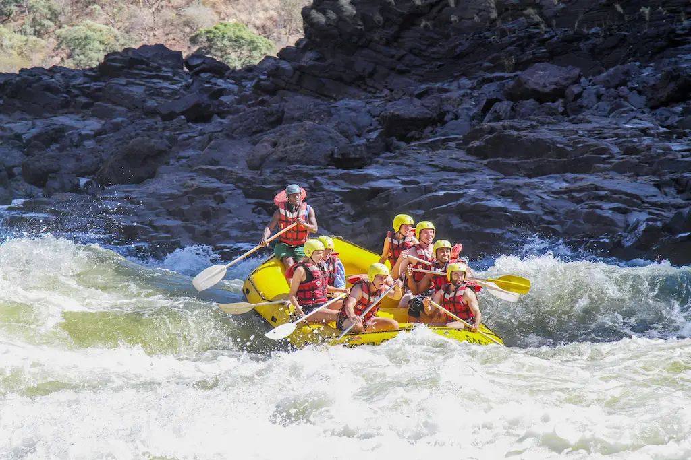
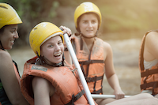

Are you ready for the adventure of a lifetime? At Dry Oar Rafting Co., we offer you the opportunity to experience the excitement of whitewater rafting firsthand. With our experienced guides and top-of-the-line equipment, we'll ensure a safe and memorable experience. If you're looking for an exciting and challenging activity that will get your heart racing, Dry Oar Rafting Co. is the perfect place for you. What are you waiting for? Book your trip today and prepare for the adventure of a lifetime.


Dry Oar Rafting
History
The story of Dry Oar Rafting Co. is one woven into the very fabric of the rivers it navigates. Founded in 1995, our journey began not with individuals, but with collective love for the thrill and serenity of whitewater adventures.
From humble beginnings on a single local river, our passion for sharing this experience grew, propelling us to explore new waterways and expand our horizons. Today, Dry Oar Rafting Co. stands as a testament to that enduring passion, recognized as a leader in the whitewater rafting industry.
Adventure Awaits You!
Colorado River

Bear River
Boise River

Peaceful Rapids

Rapids Circuit